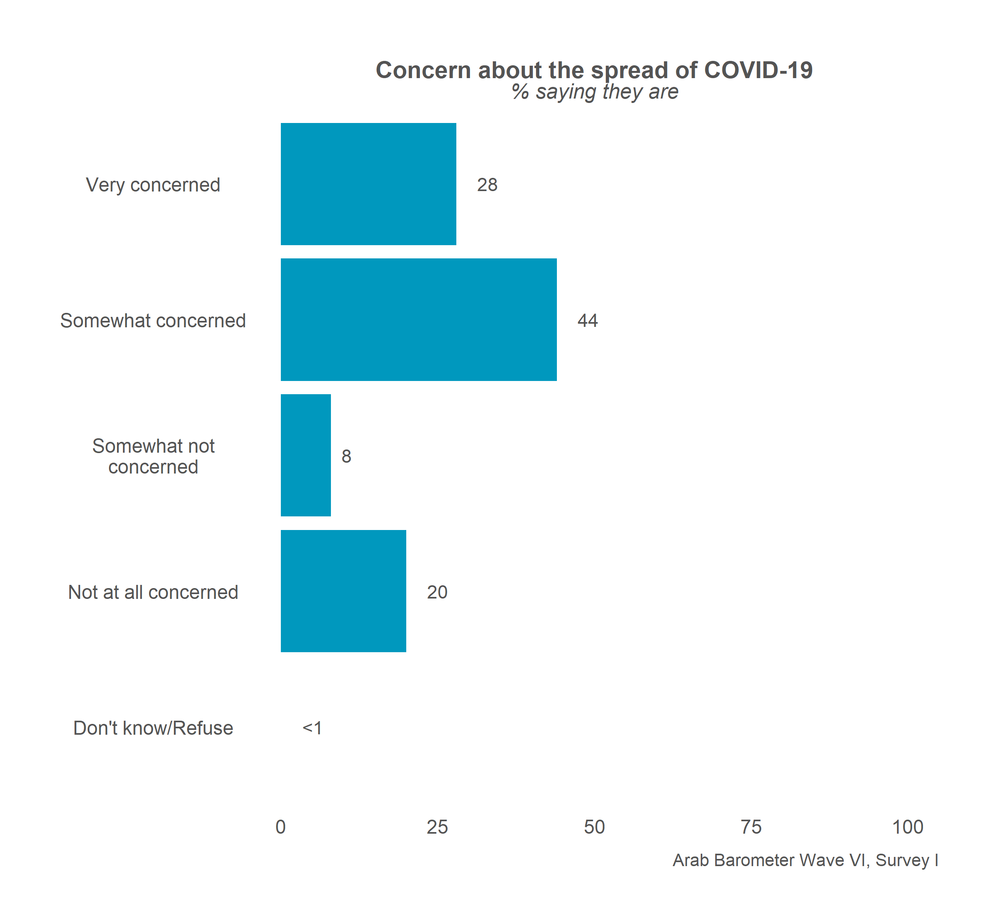

Chapter 1 Single Country Overall Graphs
This chapter will cover how to make an overall frequency graph for a single country.
1.1 Create a Single Graph
This section will go over how to make a one-off frequency graph for a single country.
At the end, your code will look like the following:
survey1 %>%
calculate_smry_individual("Q1COVID19",
"Algeria") %>%
plot_smry_individual(.caption = "Arab Barometer Wave VI, Survey I, Algeria")That code will produce the following graph:

Let’s go!
1.1.1 Create a Summary
The first step in creating a plot is to gather the data you want to display and organize it. You do this with the create_smry_individual() function. You can learn more about this function in section 6.1 in the larger ArabBarometR guide.
The three main parameters you need to provide to this function are (1) the data you are using, (2) the variable you want to plot, and (3) the country you want to plot it for. To see all the input parameters for the function, type the code ?calculate_smry_individual in your R console.
In this example, the variable we want to plot is Q1COVID19 and the country we want to plot it for is Algeria.
calculate_smry_individual(
.data = survey1, # The data you are using
.var = "Q1COVID19", # The variable you want to plot
.country = "Algeria" # The country you want to plot it for
)The above is the same as:
calculate_smry_individual(survey1,"Q1COVID19","Algeria")Which is the same as:
survey1 %>%
calculate_smry_individual("Q1COVID19",
"Algeria")The last example uses a pipe, %>%, which comes from the package dplyr, which is automatically loaded by ArabBarometR. To learn more about piping and using %>% in programming, see A Note on Piping in the larger ArabBarometR guide.
The output of any of the above expressions is the same:
## # A tibble: 5 x 2
## Q1COVID19 Percent
## <dbl+lbl> <dbl>
## 1 1 [Very concerned] 28
## 2 2 [Somewhat concerned] 44
## 3 3 [Somewhat not concerned] 8
## 4 4 [Not at all concerned] 20
## 5 666 [Don't know/Refuse] 0This data frame is what we are ultimately graphing.
There are few things to note about the summary data frame we just created.
First, there are two columns. The first column is named for the question we are graphing. The second column is named Percent. If you want to use the plotting functions in ArabBarometR to graph a summary data frame that is not created by a calculate function (see complete list of calculate functions in the ArabBarometR Guide), the data frame must be structured as two columns with the second column named Percent.
Second, you can see that the first column is labeled. The labels come from the responses in the data. If the responses in the data are not labeled, this column will not be labeled. In the next step, plotting, the y-axis labels are taken from these labels. So, if the column is not labeled, the y-axis will just be the values of the column.
Let’s store the summary as an object and move one.
Q1COVID19_summary <- survey1 %>%
calculate_smry_individual("Q1COVID19",
"Algeria")1.1.2 Plot the Summary
The next step is plot the summary we just created. To do this, we use the function plot_smry_individual(). You can learn more about this function in section 7.1 of the ArabBarometR Guide.
There is only one necessary parameter to use plot_smry_individual(): the summary data frame. For a complete list of acceptable parameters and documentation, you can run ?plot_smry_individual in your R console.
Now, we can plug our summary into the plot function:
plot_smry_individual(
.df = Q1COVID19_summary # The summary data frame
)The above code is the same as:
Q1COVID19_summary %>%
plot_smry_individual()Which is the SAME as:
survey1 %>%
calculate_smry_individual("Q1COVID19",
"Algeria") %>%
plot_smry_individual()We can do this because Q1COVID19_summary is equal to survey1 %>% calculate_smry_individual("Q1COVID19", "Algeria").
Any of the above code gives the following graph:
Almost done! Notice how the caption says Arab Barometer Wave N (DATE)? Let’s change that.
survey1 %>%
calculate_smry_individual("Q1COVID19",
"Algeria") %>%
plot_smry_individual(
.caption = "Arab Barometer Wave VI, Survey I, Algeria" # NEW caption
)Now we have the plot we started with! We’re done!